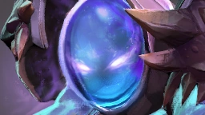
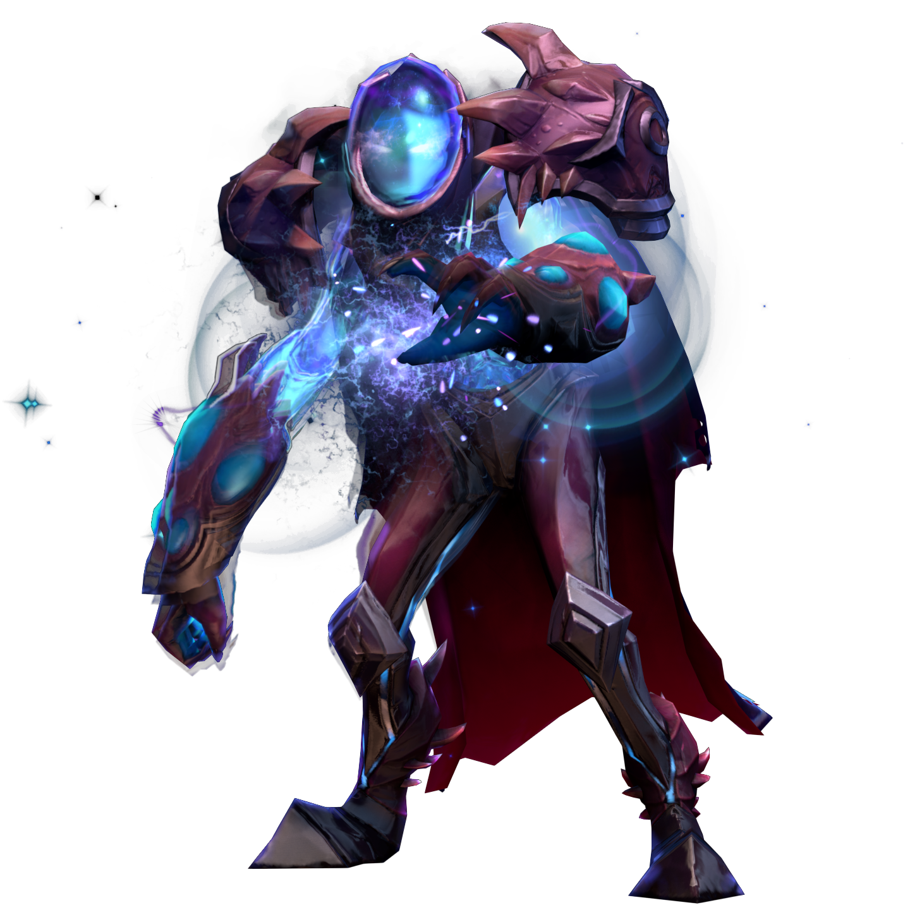

Heróis
-

-

-

-

- 
-

-

-

Abaddon
UniversalCapaz de transformar os ataques inimigos em cura para si mesmo, Abaddon sobrevive a quase qualquer confronto.
Protegendo os aliados com o seu escudo e usando a espiral alimentada pela sua energia vital para curar aliados ou prejudicar inimigos, ele está sempre pronto para cavalgar rumo à batalha.

Alchemist
ForçaSintetizando recursos extras a partir de cada uma das suas vítimas, o Alchemist não tem problemas para adquirir as ferramentas necessárias para destruir os seus inimigos.
Emboscando inimigos com ácidos corrosivos e misturas químicas instáveis, ele batalha para garantir que as suas ambiciosas escapadas continuem ininterruptas.

Ancient Apparition
InteligênciaLança uma poderosa explosão gélida de qualquer lugar do mapa.
Capaz de lançar uma poderosa explosão de gelo dilacerante através do campo de batalha, o Ancient Apparition pode estilhaçar inimigos enfraquecidos onde quer que estejam. Retardando os seus inimigos à medida que aumenta a efetividade dos seus aliados durante as batalhas, ele é uma ameaça constante aos seus adversários.

Anti-Mage
AgilidadeCorta os seus inimigos com ataques que drenam mana.
Caso o Anti-Mage tenha a oportunidade de reunir toda a sua força, poucos podem frear as suas investidas. Drenando o mana dos seus inimigos a cada ataque ou se teletransportando por pequenas distâncias para fugir de uma emboscada, encurralá-lo é um desafio para qualquer inimigo.

Arc Warden
AgilidadeCria uma cópia de si para empurrar duas trilhas.
Um fragmento estilhaçado do mesmo poder primordial dos próprios Ancestrais, Zet, o Arc Warden, prometeu ver a batalha entre os Iluminados e os Temidos chegar ao fim, seja por reunificação ou aniquilação. Ataque inimigos solitários com um fluxo de energia ou distorça o espaço para criar um campo protetor ao redor dos seus aliados. Invoque um Espectro Elétrico para patrulhar uma área em busca de inimigos, infundindo neles uma magia nociva; e então crie uma cópia de Zet, com itens e tudo o mais, para esmagar os seus inimigos.
Axe
ForçaProvoca e força inimigos a atacá-lo.
Um após o outro, o Axe corta os seus inimigos. Marchando à frente da sua equipe, ele prende os inimigos em uma batalha e então revida os seus golpes com um giro mortal da sua arma. Passando a sua lâmina de abate através de um inimigo enfraquecido, ele está sempre avançando.

Invoker
InteligênciaCria magias com inúmeras combinações de habilidades.
Com um intrincado arsenal de feitiços à sua disposição, o Invoker pode adaptar-se a qualquer situação. Cada combinação dos seus três componentes mágicos resulta em um dos seus dez feitiços, o que significa que ele nunca está sem uma forma de destruir ou escapar dos seus inimigos.
.png)
Pudge
ForçaUsa um gancho para puxar inimigos para perto.
Cada lançamento cuidadosamente calculado do conhecido gancho do Pudge assusta os seus adversários. Puxando os seus inimigos para perto e cortá-los com os seus cutelos, Pudge recebe vida e dano adicionais a cada morte e logo se torna um assassino irrefreável.
.png)